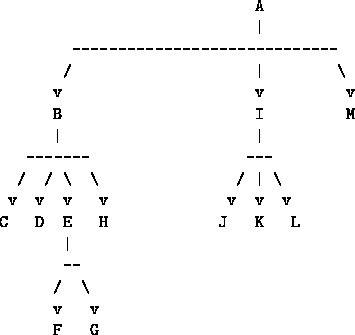

The essence of the Web for the purpose of understanding the process of searching is captured by a formal abstraction called a directed graph. A graph consists of nodes. One node may be connected to other nodes through edges. In a directed graph, such as the Web, the edges point in a given direction - that we can go from a node through an outgoing edge to another node does not imply that there is an edge in the reverse direction. Thus, an HTML document might be a node in a graph (represented by its URL) and from each such node there would be edges corresponding to the links in that document to other documents.
For example, a collection of web documents might be organized as shown in figure 1 (where each lettered node indicates a URL). This particular directed graph happens to be a tree (each node is pointed to by only one other node) but this need not be true in general.

Figure 1: A collection of linked web documents, viewed as a graph.
In order to search a directed graph, let's assume that we have two selectors for getting information from the graph:
Notice that node->neighbors and node->text are procedures that take a graph as argument and return the appropriate selector to apply to a node in the graph. On the Web, (node->neighbors graph) would produce a procedure that takes as input a URL (the node) and produces as output a list of URLs that are the links inside the document. This would involve retrieving the document using its URL, parsing the HTML and extracting the information from <a HREF=...>, <image src=...> and similar tags. Similarly, (node->text graph) would produce a procedure that retrieves the document, discards all of the mark-up commands, alphabetizes (and removes duplicates) from the text, and returns the resulting list of words.
For this problem set we'll begin with something simpler. We assume that our graph is represented as a list structure. The graph will be a list of entries, where each entry signifies a node. Each entry will itself be list, consisting of a node (represented as a symbol--the name of the node), a list of neighboring nodes, and some text stored at the node (represented as a list of symbols).
(define (make-graph-entry node neighbors text) (list node neighbors text)) (define (graph-entry->node entry) (first entry)) (define (graph-entry->neighbors entry) (second entry)) (define (graph-entry->text entry) (third entry))
For example, we could construct the graph in figure 1 as
(define test-data (list (make-graph-entry 'a '(b i m) '(some words)) (make-graph-entry 'b '(c d e h) '(more words)) (make-graph-entry 'c '() '(alphabeticallly at c node some words)) (make-graph-entry 'd '() '()) (make-graph-entry 'e '(f g) '(and even more words)) (make-graph-entry 'f '() '()) (make-graph-entry 'g '() '()) (make-graph-entry 'h '() '()) (make-graph-entry 'i '(j k l) '(more words yet)) (make-graph-entry 'j '() '()) (make-graph-entry 'k '() '()) (make-graph-entry 'l '() '())))Note that several of the nodes have no neighbors, and that several have no text.
Given this representation, we can generate the procedures to use for obtaining the node neighbors and node text:
(define (node->neighbors graph)
(lambda (node)
(let ((entry (assq node graph)))
(if entry
(graph-entry->neighbors entry)
'()))))
(define (node->text graph)
(lambda (node)
(let ((entry (assq node graph)))
(if entry
(graph-entry->text entry)
'()))))
How can we search this graph? Let's assume that we have some way to recognize when to stop searching. We'll represent this by a predicate goal? that takes a node as argument and tests whether the node is the goal of the search. The goal? procedure might examine the text at the node, or the name of the node, it might just say whether the searcher has run out of time, or it might just never return true (so the searcher will visit the entire graph), or whatever.
There are two common strategies for searching, called depth-first search and breadth-first search. In a depth-first search we start at a node, pick one of the outgoing links from it, explore that link (and all of that link's outgoing links, and so on) before returning to explore the next link out of our original node. For the graph in figure 1, that would mean we would examine the nodes (if we go left-to-right as well as depth-first) in the order: a, b, c, d, e, f, g, h, i, j, k, l, and finally m (unless we found our goal earlier, of course). The name ``depth-first'' comes from the fact that we go down the graph (in the above drawing) before we go across.
In a breadth-first search, we visit a node and then all of its ``siblings'' first, before exploring any ``children.'' For figure 1, we'd visit the nodes in the order a, b, i, m, c, d, e, h, j, k, l, f, g.
We can abstract the notions of depth-first, breadth-first, and other kinds of searches using the idea of a search strategy. A search strategy is a procedure that determines the order in which to visit the nodes of the graph. The procedure takes a node as argument and returns one of three values:
Rather than writing strategies directly, we'll write some procedures that create strategies. A strategy-maker is a procedure that returns a strategy procedure. The strategy-maker procedure takes two arguments:
For example, we'll have a procedure make-df-strategy that makes the depth-first (DF) strategy, that will behave as follows:
((make-df-strategy goal?-procedure neighbors-procedure) node)
will return true if node is a goal, false if there are no more nodes to visit, and otherwise return the next node to examine after node.
Given that we can implement strategy makers, the following procedure is an effective mechanism for searching any finite graph. Note the use of the *debugging* flag, that we can set to true if we want to record the order in which the procedure is traversing the graph:
(define (search graph strategy-maker start-node goal?)
(if *debugging*
(write-line (list 'start start-node)))
(let ((searcher
(strategy-maker goal? (node->neighbors graph))))
(define (loop node)
(let ((next-node (searcher node)))
(cond ((eq? next-node #T) 'FOUND)
((eq? next-node #F) 'NOT-FOUND)
(else
(if *debugging*
(write-line (list 'from node 'to next-node)))
(loop next-node)))))
(loop start-node)))
The hard part, of course, is writing a strategy-maker. The strategy procedure that it creates should take a node as input and return the next node to be examined. Notice that the searcher is not a mathematical function: if a node has several neighbors, then the strategy must return a different next-node each time it is called with that input node. This is a tip-off that there must be side-effects in the definition of the strategy procedure. In fact, we'll see that there are two different places where side-effects occur.
Here's an initial attempt at a depth-first strategy-maker. It doesn't quite work, but it's a good place to start. The idea is that it maintains (via side-effects to the variable *to-be-visited*) a list of nodes that need to be visited, in the order in which they should be visited. Whenever a new node is visited, all of its neighbors are added to *to-be-visited*. When *to-be-visited* is empty, we've visited all the nodes we can get to, so we give up:
(define (make-df-strategy-1 goal? neighbors)
(let ((*to-be-visited* '()))
(define (where-next? here)
(set! *to-be-visited*
(append (neighbors here) *to-be-visited*))
(cond ((goal? here) #T)
((null? *to-be-visited*) #F)
(else
(let ((next (car *to-be-visited*)))
(set! *to-be-visited* (cdr *to-be-visited*))
next))))
where-next?))
This simple algorithm does not work in general (see tutorial exercise 3), but it does work for the graph in figure 1.